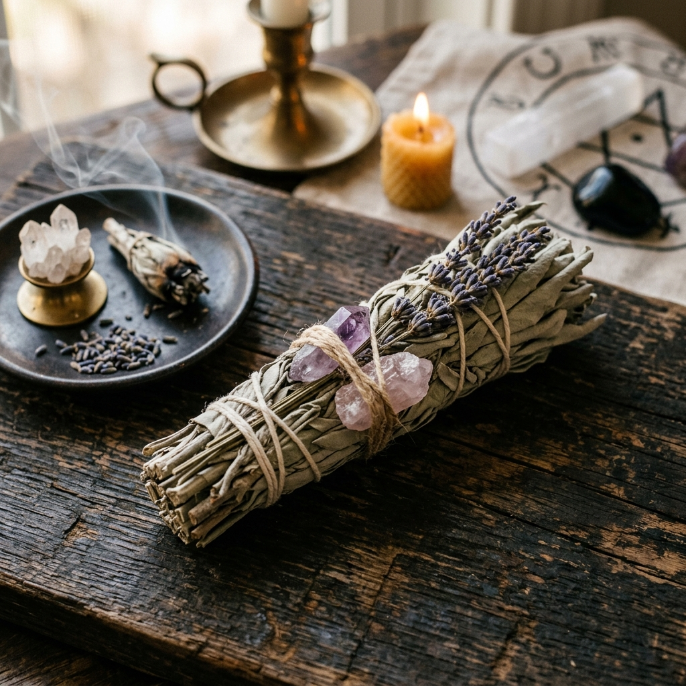
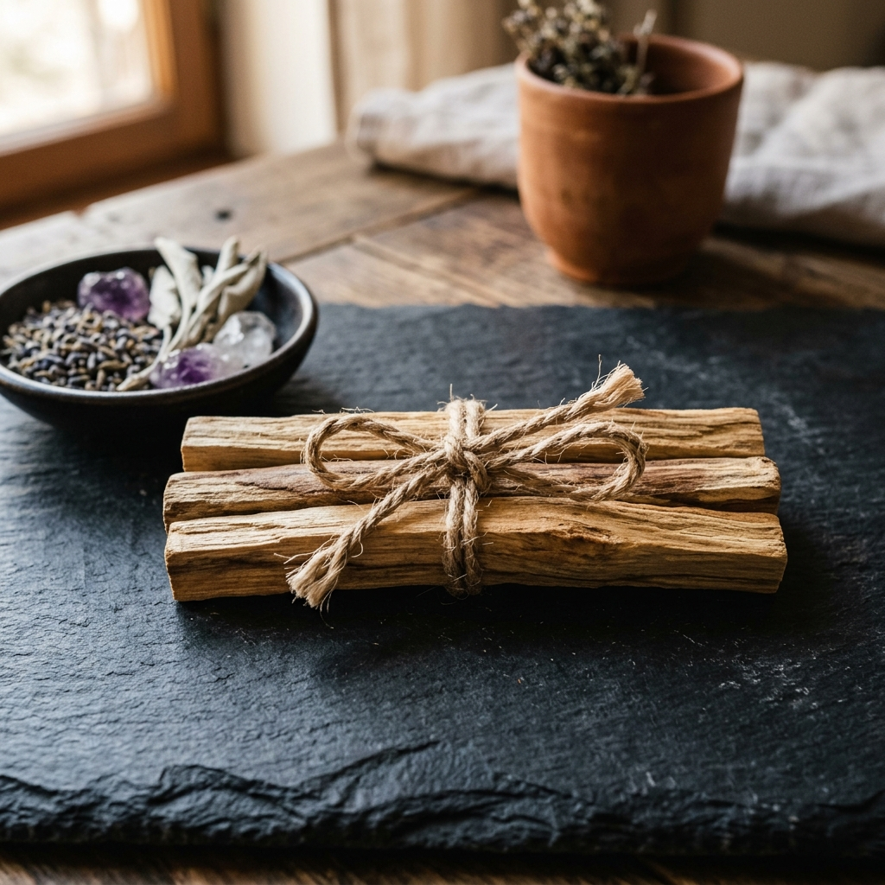
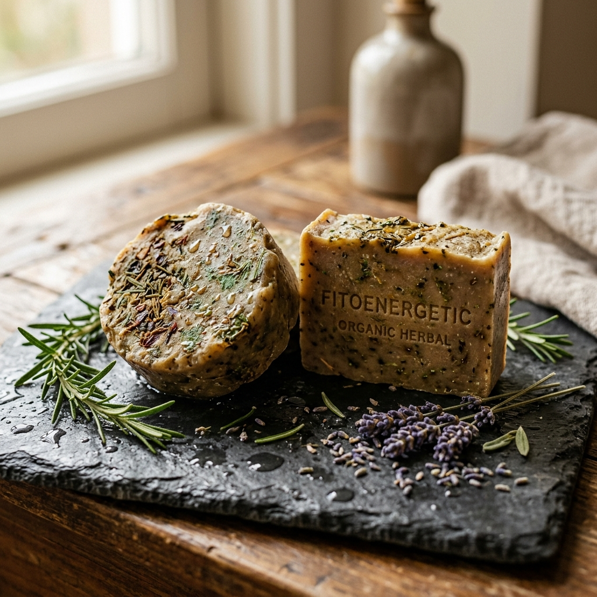
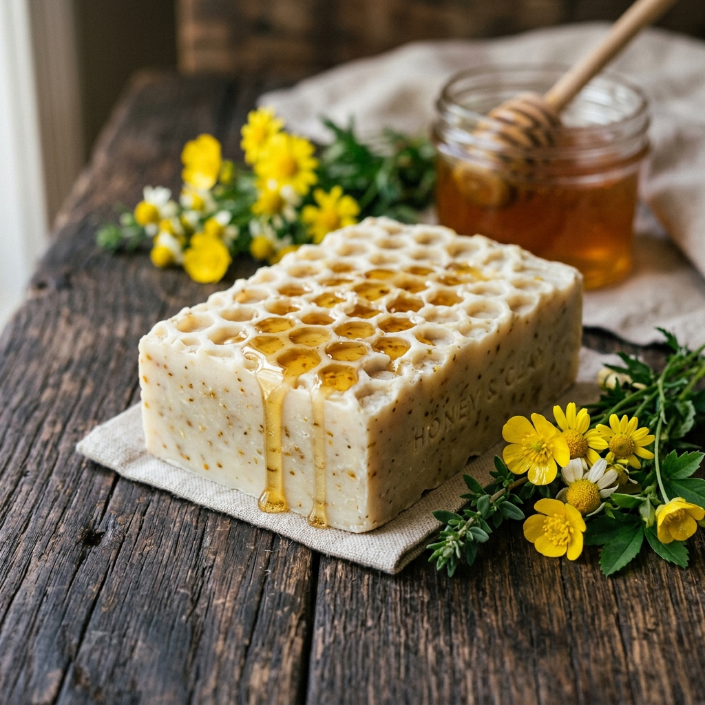
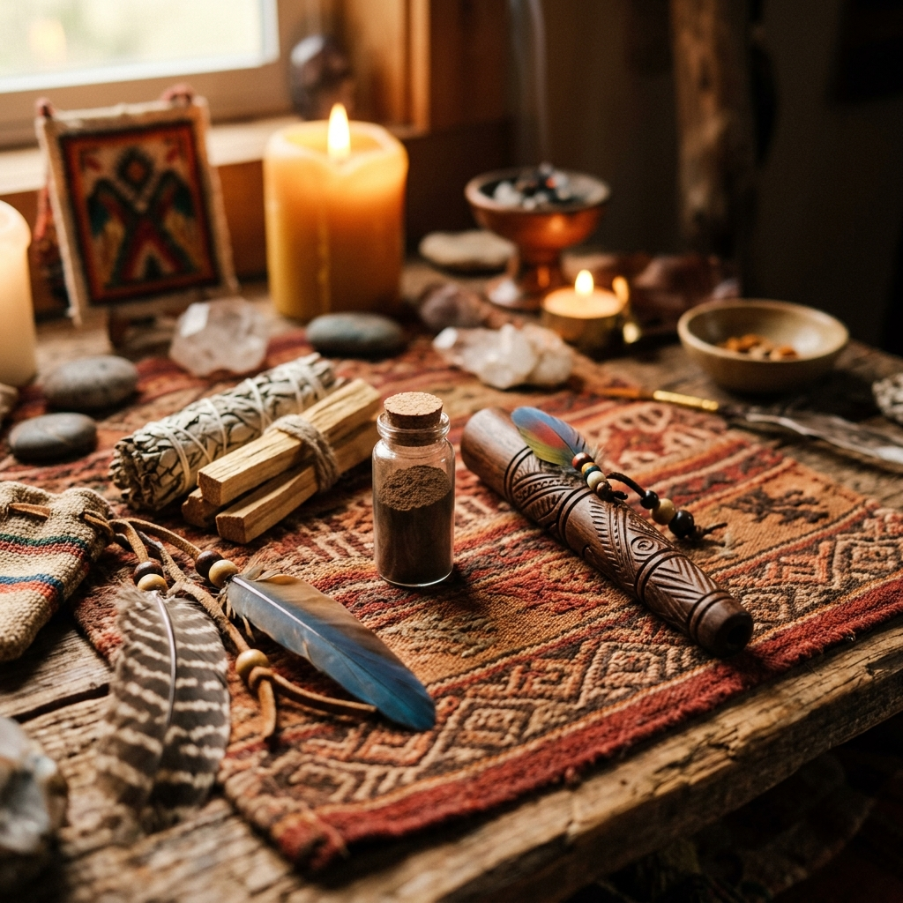
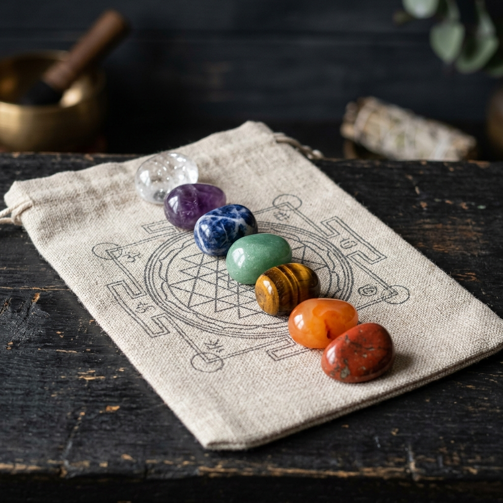
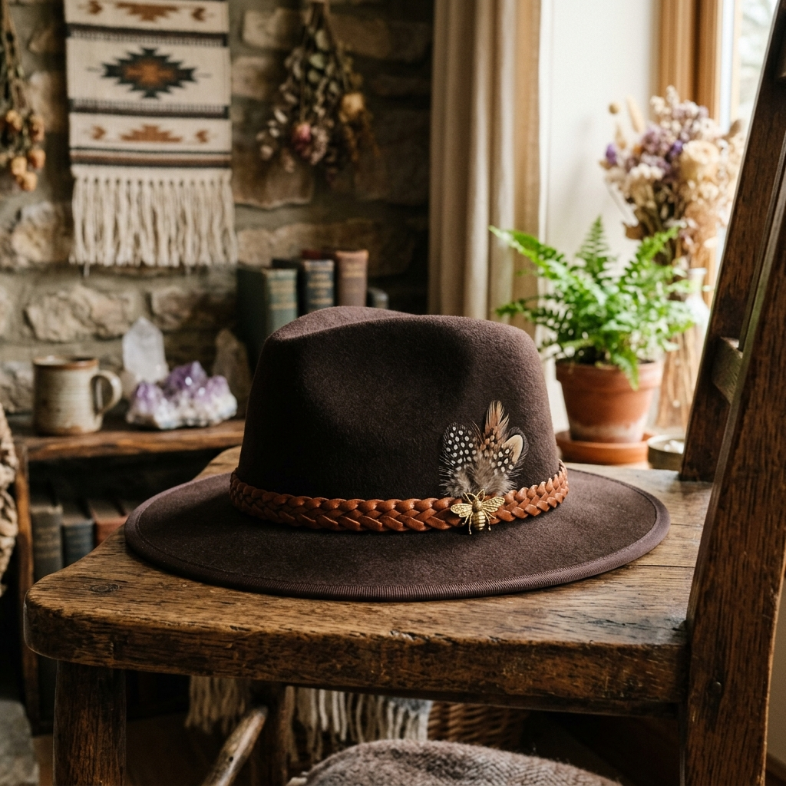

Vivências & Caminhos de Cura
"O despertar espiritual é o ato de olhar para trás com reverência, e caminhar à frente com autonomia."
Eventos & Vivências Ativas

Encontro com a Abelha Rainha 🐝
Feitio de Honey Jar
Vivência dedicada à confecção do Honey Jar (um patuá simbólico de manifestação e atração de abundância através da medicina do mel e sabedoria das abelhas).
*Todos os materiais inclusos no encontro. Vagas Limitadas.
Constelação em Grupo 🌳
Círculo de Cura Sistêmica
Um espaço para olhar com profundo respeito para a sua própria história, reconhecer o seu lugar no sistema familiar e liberar padrões invisíveis de repetição para abrir novos movimentos de amor, cura e prosperidade.
*Participação e Constelação: consultar agenda.
Jornada: Equilíbrio Sagrado 🌿
Medicinas Ancestrais
Vivência profunda de rezo e conexão por meio da Sagrada Ayahuasca combinada com medicinas tradicionais: Rapé, Sananga, Medicina da Abelha, Cachimbo Sagrado, Aromaterapia e Fitoenergética. Foco no acolhimento do masculino pela Mãe Terra.
*Condução por Aline Ferrão (Servidora da Luz de Oxum).

Quando o Adulto Assume a Vida 🌻
Círculo Sistêmico
Você ainda reage pela criança que espera aprovação e preenchimento? A criança espera, o adulto age e escolhe. Novo campo de Constelação Familiar em grupo para honrar quem veio antes e permitir o adulto seguir adiante.
*Participação e Constelação: consultar disponibilidade.
Jornada de Inverno ❄️
Recolher-se para Renascer
Ritual sagrado de introspecção profunda para acolhimento do coração, desapego de cargas emocionais e recordação da luz interna. Medicina de Ayahuasca, Jurema, Sananga, Rapé e Sopros.
*Música ao vivo: Txana Miguel & Txana Kauã + Banda Sagrado Ser.

Celebração Ancestral 🔥
Noite de Rezo e Música
Grande noite especial de celebração, música e conexão profunda com as Sagradas Medicinas da Floresta. Um momento festivo e meditativo para honrar nossos caminhos e origens familiares.
*Participação Especial: Banda 4 Direções (em turnê nacional).
Mentorias & Cursos
Mentoria Individual & Escuta Consciente
Atendimento clínico individual estruturado para acolher sua dor de forma profunda. Um espaço de escuta sem julgamento para guiar você na direção de resoluções internas, utilizando ferramentas sistêmicas, energéticas e emocionais.
Agendar EntrevistaConstelação Familiar
Sessões individuais (online ou presenciais) voltadas para desembaraçar nós no amor, nas finanças, na carreira ou na saúde. Ao clarear a sua rede de conexões invisíveis, a ordem é restabelecida no sistema.
Agendar SessãoLoja Holística
Produtos vibracionais selecionados para ancorar sua energia e rituais

Incenso de Sálvia Branca
Bastão natural de Sálvia Branca para defumação e purificação energética profunda de ambientes e pessoas.

Bastão de Palo Santo
Madeira sagrada de Palo Santo in natura (3 unidades). Ideal para atração de boas energias e relaxamento durante a meditação.

Sabonete de Ervas
Sabonete artesanal elaborado com base vegetal e extrato fitoenergético de Arruda, Guiné e Alecrim para descarrego energético.

Sabonete de Argila & Mel
Sabonete artesanal de Argila Branca e Mel orgânico da colmeia. Propriedades nutritivas, hidratantes e suavizadoras.

Rapé Sagrado Tsunu
Medicina tradicional indígena feita de cinzas da casca da árvore Tsunu e tabaco de alta qualidade. Ideal para foco e aterramento.
Rapé Sagrado Murici
Rapé forte feito com cinzas de Murici. Proporciona profunda limpeza de pensamentos obsessivos e reequilíbrio dos canais.
Kuripe de Bambu Sagrado
Aplicador individual de rapé (Kuripe) entalhado à mão em bambu sagrado tratado. Formato anatômico de excelente fluxo.

Pulseira de Olho Grego
Pulseira elástica artesanal contendo pedras de Turmalina Negra e olho grego murano de proteção contra inveja e negatividade.

Chapéu Feltro Shamanic
Chapéu de feltro prémium adornado com cordão trançado de couro, penas sagradas e pingente de abelha. Edição ritualista.
Kit Cristais 7 Chakras
Conjunto contendo 7 pedras brutas e naturais selecionadas para harmonização de cada chakra. Acompanha saquinho de algodão.
Aline Ferrão
Sou Aline Ferrão, servidora da luz da mãe Oxum, mentora de despertar feminino e facilitadora dedicada às terapias integrativas e medicinas da floresta.
Minha caminhada iniciou-se na busca pessoal por ressignificar minhas próprias dores e feridas sistêmicas. Ao encontrar na Constelação Familiar Familiar e nas medicinas sagradas (Ayahuasca e a sabedoria da medicina das abelhas) meu próprio portal de renascimento, soube que meu chamado era guiar outras pessoas no mesmo caminho de volta à vida.
Hoje, no Hub Colmeia Vital em Cachoeirinha/RS, facilito rituais de rezo, partilha e profundas vivências em grupo, criando um espaço de amor e ordem para que homens e mulheres possam viver seu propósito com plenitude.